Lab12 Interface_register_streaming
Register
An HLS IP or kernel can be controlled by a host application or embedded processor using the Slave AXI4-Lite interface (s_axilite), which acts as a system bus for communication between the processor and the kernel. Using the s_axilite interface, the host or an embedded processor can start and stop the kernel and read or write data to it. When Vitis HLS synthesizes the design, the s_axilite interface is implemented as an adapter that captures the data communicated from the host in registers on the adapter.
The AXI4-Lite interface performs several functions within a Vivado IP or Vitis kernel:
-
It maps a block-level control mechanism that can be used to start and stop the kernel.
-
It provides a channel for passing scalar arguments, pointers to scalar values, function return values, and address offsets for
m_axiinterfaces from the host to the IP or kernel -
For the Vivado IP flow:
-
This flow will not use the
s_axiliteinterface by default. -
To use the
s_axiliteas a communication channel for scalar arguments, pointers to scalar values, offset tom_axipointer address, and function return type, you must manually specify the INTERFACE pragma or directive. -
Bundle: This flow supports multiple
s_axiliteinterfaces, specified by bundle. Refer to S_AXILITE Bundle Rules for more information. -
Offset: By default, the tool will place the arguments in a sequential order starting from 0x10 in the control register map. Refer to S_AXILITE Offset Option for additional details.
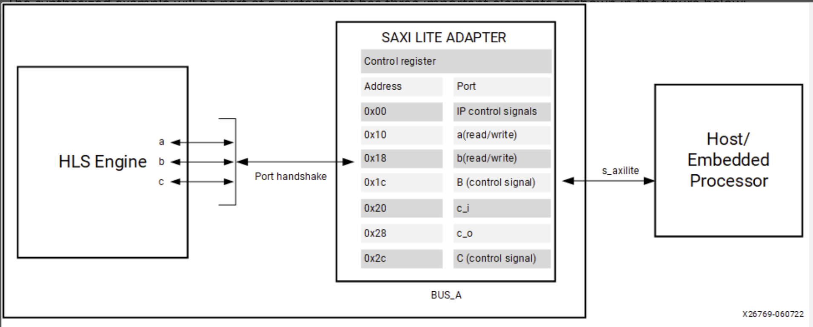
By default, Vitis HLS automatically assigns the address for each port grouped into an s_axilite interface. As described below, the size or range of addresses assigned to a port depends on the argument data type and the port protocol used. You can also explicitly define the address using the offset option as discussed in S_AXILITE Offset Option.
S_AXILITE Control Register Map
In the Control Register Map of the s_axilite interface, Vitis HLS reserves address 0x00 through 0x18 for the block-level protocol, interrupt, mailbox and auto-restart controls. The latter are present only when counted auto-restart and the mailbox are enabled, as shown below:
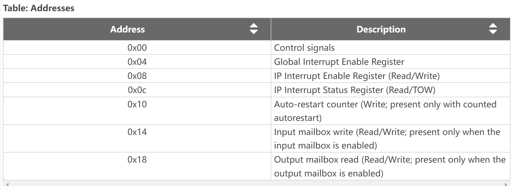
The Control signals (0X00) contains ap_start, ap_done, ap_ready, and ap_idle; and in the case of ap_ctrl_chain the block protocol also contains ap_continue. These are the block-level interface signals that are accessed through the ```s_axilite `` adapter.Ref
S_AXILITE and Port-level Protocols
In the Vivado IP flow, you can assign port-level I/O protocols to the individual ports and signals bundled into an s_axilite interface. In the Vitis kernel flow, changing the default port-level I/O protocols is not recommended unless necessary. The tool assigns a default port protocol to a port depending on the type and direction of the associated argument. The port can contain one or more of the following:
-
Data signal for the argument
-
Valid signal (
ap_vld/ap_ovld) to indicate when the data can be read -
Acknowledge signal (
ap_ack) to indicate when the data has been read
The default port protocol assignments for various argument types are as follows:
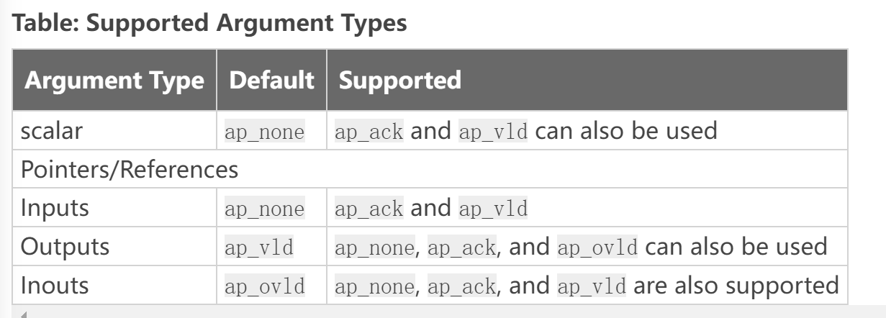
Arrays default to ap_memory. The bram port protocol is unsupported for arrays in an s_axilite interface.
S_AXILITE Bundle Rules
In the S_AXILITE Example, all the function arguments are grouped into a single s_axilite interface adapter specified by the bundle=BUS_A option in the INTERFACE pragma. The bundle option lets you group ports together into one interface.
In the Vitis kernel flow, there should only be a single interface bundle, commonly named s_axi_control by the tool. So, you should not specify the bundle option in that flow, or you will probably encounter an error during synthesis. However, in the Vivado IP flow, you can specify multiple bundles using the s_axilite interface, creating a separate interface adapter for each bundle you have defined.
After synthesis, the Synthesis Summary report provides feedback regarding the number of s_axilite adapters generated. The SW-to-HW Mapping section of the report contains the HW info showing the control register offset and the address range for each port.Ref
However, there are some rules related to using bundles with the s_axilite interface.
-
Default Bundle Names: This rule explicitly groups all interface ports with no bundle name into the same AXI4-Lite interface port, uses the tool default bundle name, and names the RTL port
s_axi_<default>, typicallys_axi_control. -
User-Specified Bundle Names: This rule explicitly groups all interface ports with the same
bundlename into the same AXI4-Lite interface port, and names the RTL port the value specified bys_axi_<string>. -
Partially Specified Bundle Names: If you specify
bundlenames for some arguments but leave other arguments unassigned, then the tool will bundle the arguments as follows: -
Group all ports into the specified bundles as the INTERFACE pragmas indicate.
-
Group any ports without bundle assignments into a default named bundle. The default name can be either the standard tool default or an alternative one if the user has already specified the tool default.
using_axi_lite
This example illustrates how an input argument of top level function can be mapped to AXI4-lite.
example.cpp
#include <stdio.h>
void example(char* a, char* b, char* c) {
#pragma HLS INTERFACE s_axilite port = a bundle = BUS_A
#pragma HLS INTERFACE s_axilite port = b bundle = BUS_A
#pragma HLS INTERFACE s_axilite port = c bundle = BUS_A
#pragma HLS INTERFACE s_axilite port = return bundle = BUS_A
*c += *a + *b;
}
The synthesis report is shown below.
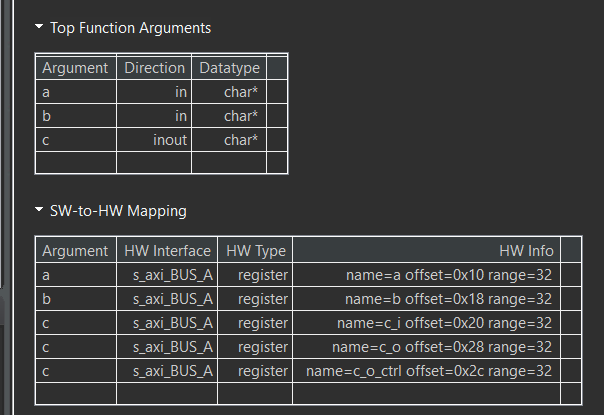
example_tb.cpp
#include <stdio.h>
void example(char* a, char* b, char* c);
int main() {
char a;
char b;
char c;
char d;
char sw_result;
printf("HLS AXI-Lite Example\n");
printf("Function c += a + b\n");
printf("Initial values a = 5, b = 10, c = 0\n");
a = 5;
b = 10;
c = 0;
d = 0;
example(&a, &b, &c);
d += a + b;
printf("HW result = %d\n", c);
printf("SW result = %d\n", d);
if (d == c) {
printf("Success SW and HW results match\n");
return 0;
} else {
printf("ERROR SW and HW results mismatch\n");
return 1;
}
}
Create the Vivado project
The configure block design can use reference materials here. And we need to choose the number of the DMA according to the number of the interface.
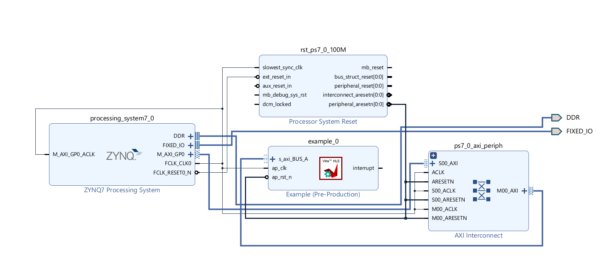
Run synthesis, Implementation, and generate bitstream
It may show some errors about I/O Ports, please fix them.
Download the bitstream file to PYNQ

import numpy as np
import pynq
from pynq import MMIO
overlay = pynq.Overlay('design_1.bit')
overlay?

top_ip = overlay.example_0
top_ip.signature
top_ip.register_map
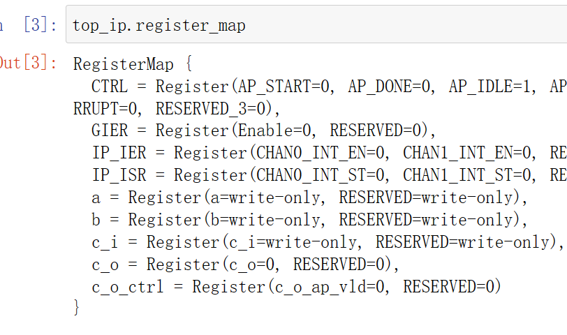
We will see:
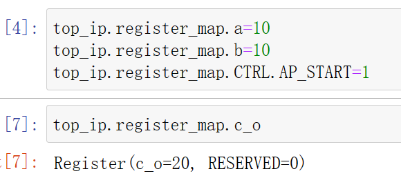
using_axi_lite_user_define_offset
In this example the user uses to define the offset and the range is dependent on the datatype and port protocol it usese. See the saxi lite documentation which explains the example in more detail.
example.cpp
#include <stdio.h>
// In this example the user uses to define the offset and the range is dependent
// on the datatype and port protocol it usese. See the saxi lite documentation
// which explains the example in more detail
void example(char* a, char* b, char* c) {
#pragma HLS INTERFACE s_axilite port = a bundle = BUS_A offset = 0x20
#pragma HLS INTERFACE s_axilite port = b bundle = BUS_A offset = 0x28
#pragma HLS INTERFACE s_axilite port = c bundle = BUS_A offset = 0x30
#pragma HLS INTERFACE s_axilite port = return bundle = BUS_A
*c += *a + *b;
}
The synthesis report is shown below.
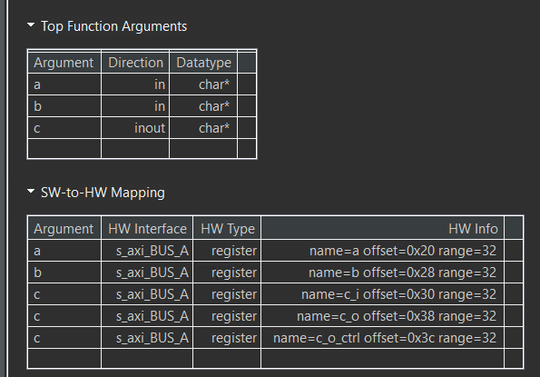
example_tb.cpp
#include <stdio.h>
void example(char* a, char* b, char* c);
int main() {
char a;
char b;
char c;
char d;
char sw_result;
printf("HLS AXI-Lite Example\n");
printf("Function c += a + b\n");
printf("Initial values a = 5, b = 10, c = 0\n");
a = 5;
b = 10;
c = 0;
d = 0;
example(&a, &b, &c);
d += a + b;
printf("HW result = %d\n", c);
printf("SW result = %d\n", d);
if (d == c) {
printf("Success SW and HW results match\n");
return 0;
} else {
printf("ERROR SW and HW results mismatch\n");
return 1;
}
}
Create the Vivado project
The configure block design can use reference materials here. And we need to choose the number of the DMA according to the number of the interface.
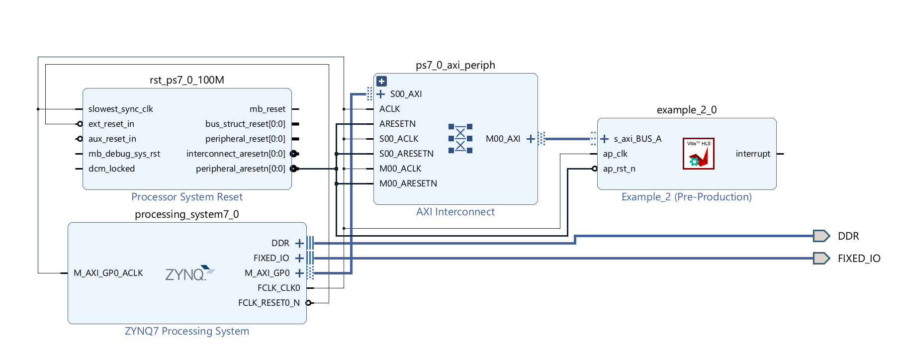
Run synthesis, Implementation, and generate bitstream
It may show some errors about I/O Ports, please fix them.
Download the bitstream file to PYNQ
import numpy as np
import pynq
from pynq import MMIO
overlay = pynq.Overlay('design_1.bit')
overlay?
We can use the overlay? to check the IP dictionary.
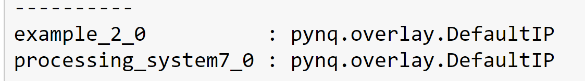
top_ip = overlay.example_0
top_ip.signature
top_ip.register_map
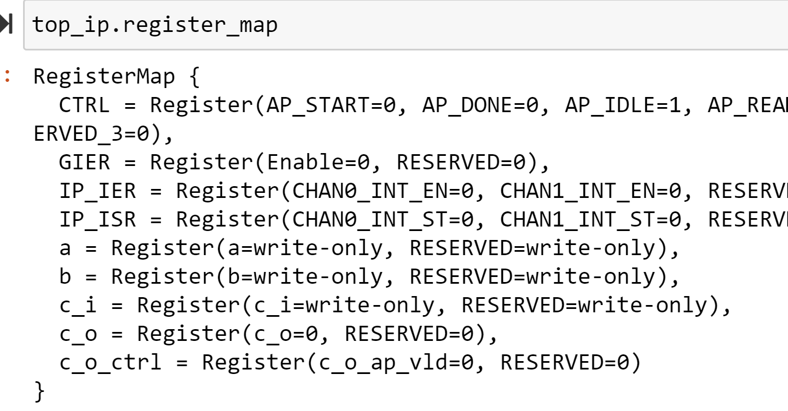
We will see:
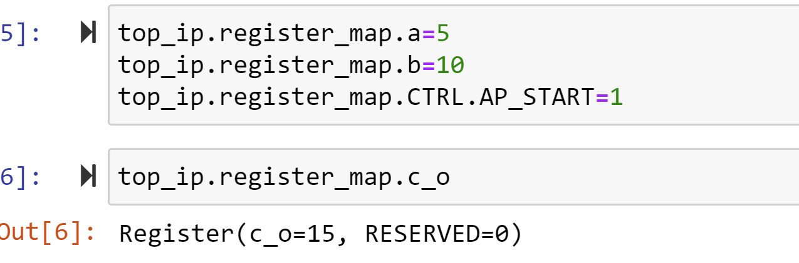
Streaming
About the streaming data paradigm, you can see the Ref.
An AXI4-Stream interface can be applied to any input argument and any array or pointer output argument. Because an AXI4-Stream interface transfers data in a sequential streaming manner, it cannot be used with arguments that are both read and written. In terms of data layout, the data type of the AXI4-Stream is aligned to the next byte. For example, if the size of the data type is 12 bits, it will be extended to 16 bits. Depending on whether a signed/unsigned interface is selected, the extended bits are either sign-extended or zero-extended.
If the stream data type is an user-defined struct, the default procedure is to keep the struct aggregated and align the struct to the size of the largest data element to the nearest byte. The only exception to this rule is if the struct contains a hls::stream object. In this special case, the struct will be disaggregated and an axi stream will be created for each member element of the struct. The maximum supported port width is 4096 bits, even for aggregated structs or reshaped arrays.
How AXI4-Stream Works
AXI4-Stream is a protocol designed for transporting arbitrary unidirectional data. In an AXI4-Stream, the TDATA width of bits is transferred per clock cycle. The transfer is started once the producer sends the TVALID signal and the consumer responds by sending the TREADY signal (once it has consumed the initial TDATA). At this point, the producer will start sending TDATA and TLAST (TUSER if needed to carry additional user-defined sideband data). TLAST signals the last byte of the stream. So the consumer keeps consuming the incoming TDATA until TLAST is asserted.
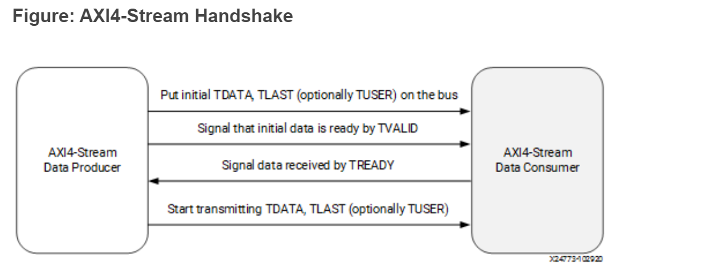
AXI4-Stream has additional optional features like sending positional data with TKEEP and TSTRB ports which makes it possible to multiplex both the data position and data itself on the TDATA signal. Using the TID and TDIST` signals, you can route streams as these fields roughly correspond to the stream and destination identifiers.
How AXI4-Stream is Implemented
If your design requires a streaming interface begin by defining and using a streaming data structure like hls::stream in Vitis HLS. This simple object encapsulates the requirements of streaming and its streaming interface is by default implemented in the RTL as a FIFO interface (ap_fifo) but can be optionally, implemented as a handshake interface (ap_hs) or an AXI4-Stream interface (axis)
If an AXI4-Stream interface (axis) is specified via the interface pragma mode option, the interface implementation will mimic the style of an AXIS interface by defining the TDATA, TVALID and TREADY signals.
If a more formal AXIS implementation is desired, then Vitis HLS requires the usage of a special data type (hls::axis defined in ap_axi_sdata.h) to encapsulate the requirements of the AXI4-Stream protocol and implement the special RTL signals needed for this interface.
The AXI4-Stream interface is implemented as a struct type in Vitis HLS and has the following signature (defined in ap_axi_sdata.h):
template <typename T, size_t WUser, size_t WId, size_t WDest> struct axis { .. };
Where:
T: The data type to be streamed. (This can support any data type, including ap_fixed.)
WUser: Width of the TUSER signal
WId: Width of the TID signal
WDest: Width of the TDest signal
When the stream data type (T) a simple integer type, there are two predefined types of AXI4-Stream implementations available:
- A signed implementation of the AXI4-Stream class (or more simply
ap_axis<Wdata, WUser, WId, WDest>)hls::axis<ap_int<WData>, WUser, WId, WDest> - An unsigned implementation of the AXI4-Stream class (or more simply
ap_axiu<WData, WUser, WId, WDest>)hls::axis<ap_uint<WData>, WUser, WId, WDest>
The value specified for the WUser, WId, and WDest template parameters controls the usage of side-channel signals in the AXI4-Stream interface.
When the hls::axis class is used, the generated RTL will typically contain the actual data signal TDATA, and the following additional signals: TVALID, TREADY, TKEEP, TSTRB, TLAST, TUSER, TID, and TDEST.
TVALID, TREADY, and TLAST are necessary control signals for the AXI4-Stream protocol. TKEEP, TSTRB, TUSER, TID, and TDEST signals are optional special signals that can pass around additional bookkeeping data.
If WUser, WId, and WDest are set to 0, the generated RTL will not include the optional TUSER, TID, and TDEST signals in the interface.
Registered AXI4-Stream Interfaces
As a default, AXI4-Stream interfaces are always implemented as registered interfaces to ensure no combinational feedback paths are created when multiple HLS IP blocks with AXI4-Stream interfaces are integrated into a larger design. For AXI4-Stream interfaces, four types of register modes are provided to control how the interface registers are implemented:
-
Forward: Only the
TDATAandTVALIDsignals are registered. -
Reverse: Only the
TREADYsignal is registered. -
Both: All signals (
TDATA,TREADY, andTVALID) are registered. This is the default. -
Off: None of the port signals are registered.
The AXI4-Stream side-channel signals are considered to be data signals and are registered whenever TDATA is registered. When connecting HLS-generated IP blocks with AXI4-Stream interfaces at least one interface should be implemented as a registered interface or the blocks should be connected via an AXI4-Stream Register Slice. There are two basic methods to use an AXI4-Stream in your design:
-
Use an AXI4-Stream without side-channels.
-
Use an AXI4-Stream with side-channels.
This second-use model provides additional functionality, allowing the optional side channels which are part of the AXI4-Stream standard, to be used directly in your C/C++ code.
axi_stream_to_master
This example illustrates using a stream and writing (with bursts) to a memory-mapped interface.
example.h
#include "ap_axi_sdata.h"
#include "ap_int.h"
#include "hls_stream.h"
typedef ap_axiu<64, 0, 0, 0> trans_pkt;
void example(hls::stream<trans_pkt>& inStreamTop, ap_uint<64> outTop[1024]);
// Expects max bandwidth at 64 beats burst (for 64-bit data)
static constexpr int MAX_BURST_LENGTH = 64;
static constexpr int BUFFER_FACTOR = 64;
// Buffer sizes
static constexpr int DATA_DEPTH = MAX_BURST_LENGTH * BUFFER_FACTOR;
static constexpr int COUNT_DEPTH = BUFFER_FACTOR;
struct data {
ap_int<64> data_filed;
ap_int<1> last;
};
example.cpp
#include "example.h"
/// Reads from in_stream and in_counts, Write to out_memory
//Input: in_stream and in_counts
//Output: out_memory
void streamtoparallelwithburst(hls::stream<data>& in_stream,
hls::stream<int>& in_counts,
ap_uint<64>* out_memory) {
data in_val;
do {
int count = in_counts.read();
for (int i = 0; i < count; ++i) {
#pragma HLS PIPELINE
in_val = in_stream.read();
out_memory[i] = in_val.data_filed;
}
out_memory += count;
} while (!in_val.last);
}
//The function computes the number of the input data
//Input: in_stream
//Output: out_stream and out_counts
void getinstream(hls::stream<trans_pkt>& in_stream,
hls::stream<data>& out_stream, hls::stream<int>& out_counts) {
int count = 0;
trans_pkt in_val;
do {
#pragma HLS PIPELINE
in_val = in_stream.read();
data out_val = {in_val.data, in_val.last};
out_stream.write(out_val);
if (count == MAX_BURST_LENGTH-1 || in_val.last) {
out_counts.write(count+1);
count = 0;
}
else
{
count++;
}
} while (!in_val.last);
}
void example(hls::stream<trans_pkt>& inStreamTop, ap_uint<64> outTop[1024]) {
#pragma HLS INTERFACE axis register_mode = both register port = inStreamTop
#pragma HLS INTERFACE m_axi max_write_burst_length = 256 latency = 10 depth = \
1024 bundle = gmem0 port = outTop
#pragma HLS INTERFACE s_axilite port = outTop bundle = control
#pragma HLS INTERFACE s_axilite port = return bundle = control
#pragma HLS DATAFLOW
hls::stream<data, DATA_DEPTH> buf;
hls::stream<int, COUNT_DEPTH> count;
getinstream(inStreamTop, buf, count);
streamtoparallelwithburst(buf, count, outTop);
}
The synthesis report is shown below:
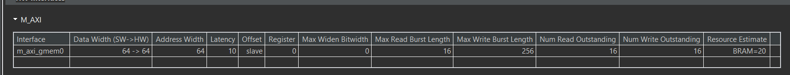
The axis port have all signals.
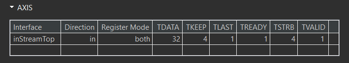
example_tb.h
#include "example.h"
int main() {
int err = 0;
ap_uint<64> out_t[1024];
hls::stream<trans_pkt> inStream_t;
trans_pkt dataStream_t;
for (int i = 0; i < 1024; i++) {
dataStream_t.data = i;
dataStream_t.keep = -1;
if (i < 1023) {
dataStream_t.last = 0;
} else {
dataStream_t.last = 1;
}
inStream_t.write(dataStream_t);
}
example(inStream_t, out_t);
return err;
}
And the export IP is shown below and the inStreamTop port is axis port and the m_axi_gmem_0 port is m_axi port.
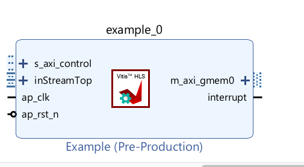
Create the Vivado project
The configure block design can use reference materials here. And we need to choose the number of the DMA according to the number of the interface.
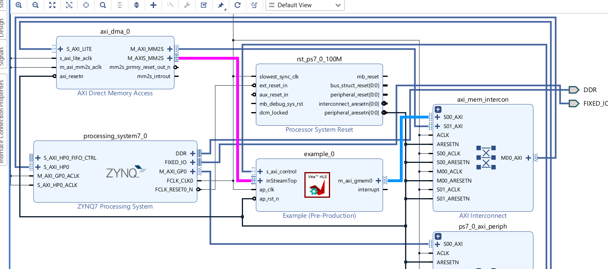
Run synthesis, Implementation, and generate bitstream
It may show some errors about I/O Ports, please fix them.
Download the bitstream file to PYNQ
import numpy as np
import pynq
from pynq import MMIO
hw = pynq.Overlay('design_1.bit')
hw?
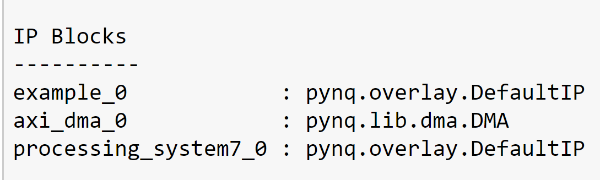
Allocate DMA memory address size
The first step is to allocate the buffer. pynq allocate will be used to allocate the buffer, and NumPy will be used to specify the type of the buffer.
top_ip = overlay.example_0
mm2s =overlay.axi_dma_0.sendchannel
top_ip.signature
N=1024
a_buffer = pynq.allocate((N), np.int32)
b_buffer = pynq.allocate((N),np.int64)
# initialize input
for i in range(0,1024):
a_buffer[i]=i
# specify the address
# These addresses can be found in the generated .v file
top_ip.write(0x10, bptr)
top_ip.write(0x00, 1)
top_ip.register_map
## start AXI-DMA transfer
mm2s.transfer(a_buffer)
mm2s.wait()
We will see:
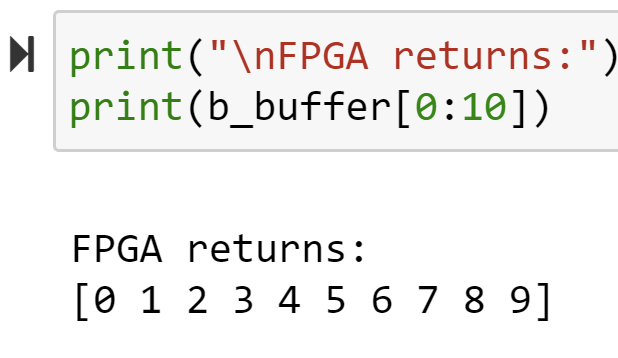
using_array_of_streams
While arrays can be converted to streams, it can often lead to coding and synthesis issues as arrays can be accessed in random order while a stream requires a sequential access pattern where every element is read in order. To avoid such issues, any time a streaming interface is required, it is highly recommended to use the hls::stream object as described in Using HLS Streams. The usage of this construct will enforce streaming semantics in the source code. However, to convert an array to a stream you should perform all the operations on temp variables.
This example illustrates how to define and use an array of streams in the interface. Instead of defining an array and then using a pragma to map this array to a stream, it is highly recommended to use the hls::stream objects instead.
example.h
#ifndef __ARRAY_OF_STREAMS_EXAMPLE__
#define __ARRAY_OF_STREAMS_EXAMPLE__
#include "hls_stream.h"
#include <iostream>
#define M 3
extern void dut(hls::stream<int> s_in[M], hls::stream<int> s_out[M],int *sum);
#endif
example.cpp
#include "example.h"
//The function adds 2 to every input data and outputs and the sum of the output data.
//Input: s_in[M]
//Output: s_out[M] and sum
void dut(hls::stream<int> s_in[M], hls::stream<int> s_out[M],int *sum) {
#pragma HLS INTERFACE axis port = s_in
#pragma HLS INTERFACE axis port = s_out
#pragma HLS INTERFACE ap_ctrl_none port=return
#pragma HLS INTERFACE mode=s_axilite port=return
#pragma HLS INTERFACE mode=s_axilite port=sum
for (int j = 0; j < M; j++) {
#pragma HLS UNROLL
for (int i = 0; i < 10; i++) {
#pragma HLS PIPELINE
int val = s_in[j].read();
s_out[j].write(val + 2);
*sum += val;
}
}
}
example_tb.h
#include "example.h"
int main() {
hls::stream<int> s_in[M], s_out[M];
for (unsigned j = 0; j < M; j++) {
for (unsigned i = 0; i < 10; i++) {
s_in[j].write(i);
}
}
int ret=0;
dut(s_in, s_out,&ret);
printf("ret is %d\r\n",ret);
for (unsigned j = 0; j < M; j++) {
for (unsigned i = 0; i < 10; i++) {
if (s_out[j].read() != i + 2)
return 1;
}
}
return 0;
}
And the export IP is shown below and the ports are axis port and they have’t last signal.
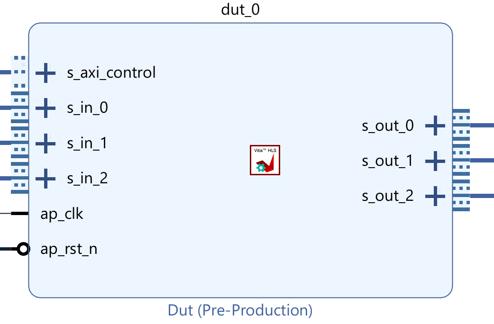
So we add the middle_data IP to provide. The num need to change by different projects.
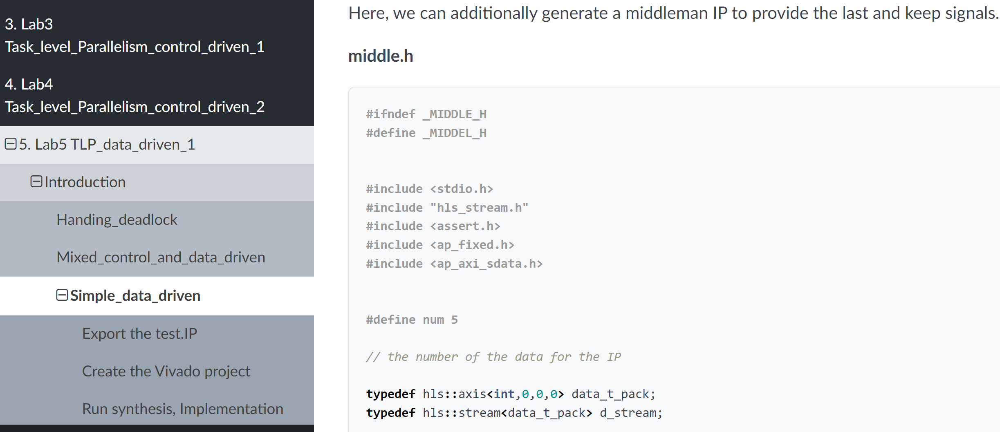
Create the Vivado project
The configure block design can use reference materials here. And we need to choose the number of the DMA according to the number of the interface.
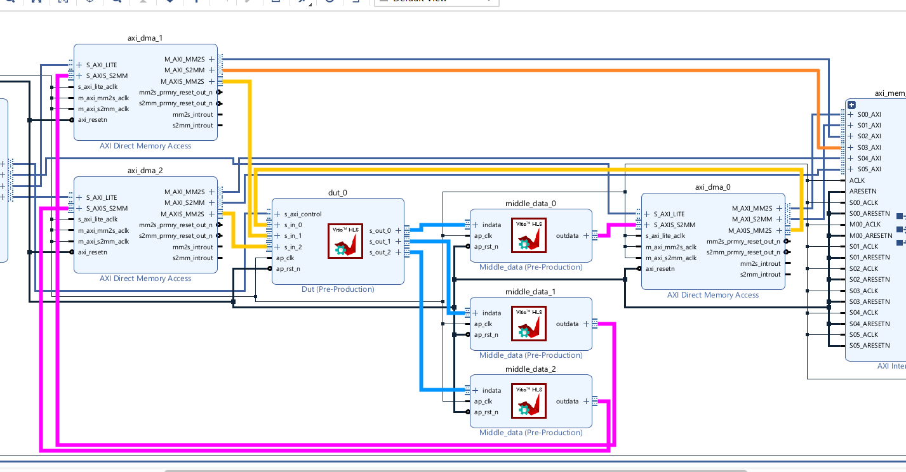
Run synthesis, Implementation, and generate bitstream
It may show some errors about I/O Ports, please fix them.
Download the bitstream file to PYNQ
import numpy as np
import pynq
from pynq import MMIO
hw = pynq.Overlay('design_1.bit')
hw?
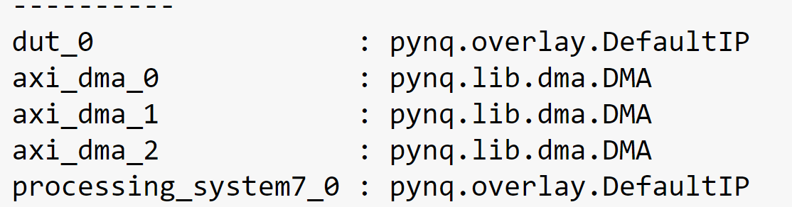
Allocate DMA memory address size
The first step is to allocate the buffer. pynq allocate will be used to allocate the buffer, and NumPy will be used to specify the type of the buffer.
dma0 = hw.axi_dma_0
dma1 = hw.axi_dma_1
dma2 = hw.axi_dma_2
N = 10
oBuf_0 = allocate(shape=(N,), dtype = np.int32)
iBuf_0 = allocate(shape=(N,), dtype = np.int32)
oBuf_1 = allocate(shape=(N,), dtype = np.int32)
iBuf_1 = allocate(shape=(N,), dtype = np.int32)
oBuf_2 = allocate(shape=(N,), dtype = np.int32)
iBuf_2 = allocate(shape=(N,), dtype = np.int32)
# initialize input
for i in range(N):
oBuf_0[i]= i
oBuf_1[i]= i
oBuf_2[i]= i
## start AXI-DMA transfer
dma0.sendchannel.transfer(oBuf_0)
dma1.sendchannel.transfer(oBuf_1)
dma2.sendchannel.transfer(oBuf_2)
dma0.recvchannel.transfer(iBuf_0)
dma1.recvchannel.transfer(iBuf_1)
dma2.recvchannel.transfer(iBuf_2)
dma0.sendchannel.wait()
dma1.sendchannel.wait()
dma2.sendchannel.wait()
dma0.recvchannel.wait()
dma1.recvchannel.wait()
dma2.recvchannel.wait()
We will see:
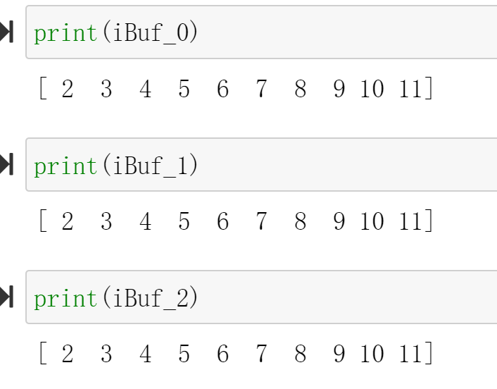
Demonstrate
Please create an HLS component that uses the axi_lite interface and axi_stream_to_master interface and using_array_of_streams interface separately and implement them on the PYNQ-Z2 board, and you can refer to the examples of the tutorial.